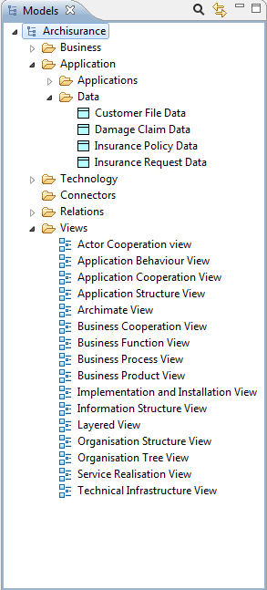

An ArchiMate model consists of a number of ArchiMate elements belonging to three "layers" - the "Business" layer, the "Application" layer and the "Technology" layer. Each ArchiMate element belongs to one of these layers. For example, a "Business Object" belongs to the "Business" layer and an "Application Component" belongs to the Application layer. The following is a list of all the ArchiMate elements grouped by their layers:
Business Layer
Business actor
Business role
Business collaboration
Business interface
Business object
Business process
Business function
Business interaction
Business event
Business service
Representation
Meaning
Value
Product
Contract
Application Layer
Application component
Application collaboration
Application interface
Data object
Application function
Application interaction
Application service
Technology Layer
Node
Device
Network
Communication path
Infrastructure interface
System software
Infrastructure service
Artifact
Each element in the model can connect to one or more other elements via one or more relationships (connections). These are as follows:
Relationships
Association
Access
Used by
Realization
Assignment
Aggregation
Composition
Flow
Triggering
Grouping
Junction
Specialization
It is beyond the scope of this guide to explain these elements and their relationships. For more information refer to the Archimate 1.0 Specification Guide (available from http://www.archimate.org/)
An ArchiMate model consists of configurations of these elements connected to each other via the various relationships. The normative model is represented in Archi in the "Models" window as a tree structure organised into folders:

The Model Tree window showing an example model for "Archisurance"
Each ArchiMate element and relationship is placed under its respective folder in the Model Tree.